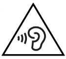

Informazioni su sicurezza e normative: g.co/pixel/safety o Impostazioni
Dove trovare informazioni sul prodotto
Questa guida include le linee guida di base sulla sicurezza riportate nel libretto stampato relativo a sicurezza e garanzia fornito con Pixel 6 e Pixel 6 Pro. Include inoltre informazioni aggiuntive su sicurezza, garanzia e normative relative a Pixel 6 e Pixel 6 Pro.
Informazioni su sicurezza e normative: g.co/pixel/safety o Impostazioni  Informazioni sul telefono
Informazioni sul telefono  Manuale su normative e sicurezza.
Manuale su normative e sicurezza.
Dettagli sui termini della garanzia applicabili al paese in cui hai acquistato il dispositivo e procedura per presentare una richiesta in garanzia: g.co/pixel/warranty.
Etichette normative sulle apparecchiature elettroniche e valori del tasso di assorbimento specifico (SAR, Specific Absorption Rate) relativi al tuo dispositivo: Impostazioni  Informazioni sul telefono
Informazioni sul telefono  Etichette normative.
Etichette normative.
Guida completa online: g.co/pixel/help.
 |
AVVISO: INFORMAZIONI SULLA SALUTE E SULLA SICUREZZA; LEGGI PRIMA DELL'USO PER RIDURRE IL RISCHIO DI LESIONI PERSONALI, MALESSERI, DANNI MATERIALI, COMPRESI DANNI AGLI ACCESSORI DI PIXEL 6 O PIXEL 6 PRO O A QUALSIASI DISPOSITIVO COLLEGATO, E ALTRI POTENZIALI PERICOLI |
Utilizza il tuo telefono con attenzione. Se smonti, fai cadere, pieghi, bruci, schiacci o perfori il telefono, potresti danneggiare il telefono stesso o la batteria. Non utilizzare il telefono se l'alloggiamento è danneggiato, lo schermo è rotto o sono presenti altri tipi di danni fisici. L’utilizzo di un telefono danneggiato potrebbe comportare il surriscaldamento o provocare lesioni. Non esporre il telefono a liquidi: potrebbe verificarsi un cortocircuito o un surriscaldamento. Se il telefono si bagna, non tentare di asciugarlo utilizzando una fonte di calore esterna.
Il telefono è progettato per funzionare al meglio a temperature comprese tra 0 e 35 °C e deve essere conservato a temperature comprese tra -20 e 45 °C. Non esporre il telefono a temperature superiori a 45 °C, ad esempio sul cruscotto dell'auto o vicino a una bocchetta di riscaldamento, per evitare di danneggiare il prodotto, surriscaldare la batteria o comportare il rischio di incendio. Tieni il telefono lontano dalle fonti di calore e dalla luce diretta del sole. Se il dispositivo si surriscalda, scollegalo dalla fonte di alimentazione se è collegato, spostalo in un luogo più fresco e non utilizzarlo finché non si è raffreddato. Il telefono è progettato per funzionare al meglio a un'altitudine massima di 5000 m.
In determinate modalità, ad esempio gioco, video, torcia, realtà virtuale o realtà aumentata, il telefono può generare più calore di quello che genererebbe in condizioni operative normali. Di conseguenza il telefono potrebbe funzionare in modalità a consumo ridotto o spegnersi temporaneamente. Presta particolare attenzione quando utilizzi il dispositivo in queste modalità. Per ulteriori informazioni sui rischi associati all'esposizione prolungata al calore, consulta la sezione "Esposizione prolungata al calore" che trovi di seguito.
Non tentare di riparare autonomamente il telefono. Lo smontaggio del dispositivo potrebbe comportare la perdita della resistenza all'acqua oppure causare lesioni o danni al dispositivo.
Ad esempio, il dispositivo contiene un laser che può essere danneggiato durante lo smontaggio, esponendoti potenzialmente a pericolose emissioni laser che non sono visibili.
Contatta l'assistenza clienti se non funziona correttamente o è stato danneggiato. Per ulteriori informazioni, visita la pagina g.co/pixel/contact.
Assicurati che la circolazione dell’aria per l’alimentatore e il telefono sia adeguata quando i dispositivi sono in uso o durante la ricarica. L'utilizzo di cavi o alimentatori danneggiati oppure la ricarica in presenza di umidità può provocare incendio, folgorazione o lesioni, nonché danneggiare il telefono o altri oggetti. Non ricaricare il telefono quando è bagnato. Evita di ricaricare il dispositivo alla luce diretta del sole.
Quando ricarichi il dispositivo, assicurati che l'alimentatore sia collegato a una presa di corrente vicina al dispositivo e facilmente raggiungibile. Non forzare l'ingresso di questo alimentatore e di altri alimentatori o spine in una presa di corrente se lo spazio non è sufficiente. Per scollegare l'alimentatore da una presa di corrente, tira tenendo l'alimentatore, mai il cavo di ricarica. Non torcere o schiacciare il cavo e non forzare l'ingresso di un connettore in una porta. Se durante la ricarica ricevi un messaggio che ti invita a scollegare il dispositivo di ricarica o l'alimentatore, scollegali. Prima di mettere di nuovo in carica il telefono, assicurati che il connettore del cavo di ricarica e la porta di ricarica del telefono siano asciutti e privi di ostacoli.
Carica il telefono esclusivamente con il cavo in dotazione o con accessori di ricarica compatibili, reperibili sul Google Store o presso un rivenditore Google autorizzato (cerca il badge "Made For" di Google). L'adattatore CA deve essere certificato con fonte di alimentazione limitata conforme allo standard IEC 60950-1 e/o classificata come PS2 in base allo standard IEC 62368-1, pari a 5 V CC, massimo 3 A; 9 V CC, massimo 3 A quando il telefono è utilizzato con un adattatore CA abilitato USB PD e fino a 11 V CC, massimo 3 A per l'adattatore CA abilitato USB PD 3.0 PPS, nonché qualificato in base ai requisiti di certificazione CTIA per la conformità dei sistemi a batteria allo standard IEEE 1725. L'uso di accessori di ricarica non compatibili può provocare incendi, scosse elettriche, lesioni o danni al dispositivo e agli accessori.
È possibile ricaricare il telefono con un caricabatterie wireless approvato da Google o conforme allo standard Qi. Non frapporre altri oggetti metallici o magnetici tra il caricabatterie wireless e il tuo telefono, in quanto ciò potrebbe causare il riscaldamento dell'altro oggetto o impedire la corretta ricarica del dispositivo. Alcuni esempi di oggetti di questo tipo sono monete, gioielli, strumenti per le schede SIM e carte di credito. Se utilizzi una custodia per smartphone di metallo o magnetica, rimuovila prima della ricarica wireless, per evitare che il dispositivo o il caricabatterie si surriscaldino o che il dispositivo non si carichi correttamente.
Il telefono e il caricabatterie emanano calore durante il normale funzionamento e rispettano gli standard e i limiti di temperatura stabiliti per le superfici. Evita il contatto prolungato con la pelle quando il dispositivo è in uso o in ricarica, perché l'esposizione prolungata della pelle a superfici calde potrebbe causare malesseri o ustioni. Non dormire sopra o con il dispositivo o l'alimentatore e non coprirli con una coperta o un cuscino. Tieni presente questo aspetto nel caso in cui tu soffra di una condizione fisica che influisce sulla capacità di sentire il calore sulla pelle.
Questo dispositivo non è un giocattolo. Il telefono potrebbe contenere (o potrebbe essere fornito insieme a) componenti di piccole dimensioni, elementi in plastica, vetro o metallo e parti con bordi taglienti che potrebbero provocare lesioni o comportare il rischio di soffocamento. Ci sono stati casi in cui i bambini si sono strangolati con fili e cavi. Tieni i fili e i cavi del telefono lontano dalla portata dei bambini (a una distanza di 0,9 metri) e non consentire loro di giocare con il telefono e gli accessori. Potrebbero fare del male a loro stessi o ad altri o danneggiare accidentalmente il telefono. In caso di ingestione di piccole parti, rivolgiti immediatamente a un medico.
|  | L'esposizione prolungata a suoni intensi (inclusa la musica) può causare la perdita dell'udito. Per impedire eventuali danni all'udito, evita l'ascolto a un volume elevato per periodi prolungati. L'esposizione costante a volumi elevati e al rumore di fondo può far sì che i suoni forti siano percepiti come più bassi di quanto non siano in realtà. Controlla il volume prima di utilizzare le cuffie o gli auricolari. |
Il telefono include una batteria ricaricabile agli ioni di litio, che costituisce un componente sensibile e può provocare lesioni se viene danneggiata. Non provare a rimuovere la batteria. Per sostituire la batteria contatta Google o un fornitore di servizi autorizzato Google. Per conoscere le informazioni di contatto, visita la pagina g.co/pixel/contact. La sostituzione da parte di professionisti non qualificati potrebbe danneggiare il dispositivo. La sostituzione inappropriata o l'utilizzo di una batteria non idonea potrebbero comportare il rischio di incendio, esplosione, perdite o altri pericoli. Non modificare o rigenerare/ricondizionare la batteria, forarla o tentare di inserirvi oggetti. Evita, inoltre, di immergere la batteria in acqua o altri liquidi o metterla a contatto con tali liquidi oppure di esporla a fuoco, calore eccessivo e/o altri pericoli.
Evita di causare il cortocircuito della batteria e che oggetti metallici o conduttori vengano a contatto con i terminali della batteria. Evita di far cadere il telefono o la batteria. Se il telefono o la batteria cadono, soprattutto su una superficie dura, e rilevi o sospetti la presenza di danni, contatta Google o un fornitore di servizi autorizzato da Google per un controllo. Se la batteria presenta delle perdite, evita che il liquido venga a contatto con occhi, pelle o indumenti. Se il liquido viene a contatto con gli occhi, non strofinarli. Sciacquali immediatamente con acqua pulita e consulta un medico.
Questo telefono contiene una batteria ricaricabile agli ioni di litio conforme allo standard IEEE 1725 e ad altri standard vigenti.
Smaltisci e trasporta il dispositivo, le batterie e gli accessori secondo le normative locali in materia ambientale e di trasporto. Non trasportarli in modo improprio e non gettarli nei rifiuti domestici. Smaltimento o trasporto non corretti possono provocare incendi, esplosioni e/o altri pericoli. Non aprire, schiacciare o esporre il dispositivo a temperature superiori a 45 °C e non bruciarlo. Per ulteriori informazioni su come riciclare correttamente dispositivo, batterie e accessori, visita la pagina g.co/pixel/recycle.
Per evitare danni ai componenti o ai circuiti interni, non utilizzare o riporre il telefono o i suoi accessori in ambienti con presenza di polvere, fumo, umidità o sporcizia, né in prossimità di campi magnetici. Tieni il telefono lontano dalle fonti di calore e dalla luce diretta del sole. Non lasciare il telefono per periodi di tempo prolungati all'interno di un veicolo o in luoghi in cui la temperatura potrebbe superare i 45 °C, ad esempio sul cruscotto dell'auto, sul davanzale di una finestra, vicino a una bocchetta di riscaldamento o dietro a una superficie di vetro esposta alla luce diretta del sole o a una forte luce ultravioletta. Tali situazioni potrebbero infatti danneggiare il telefono, surriscaldare la batteria o comportare il rischio di incendio o esplosione.
Non ricaricare, utilizzare, conservare o trasportare il telefono in presenza di materiali infiammabili o esplosivi (ad esempio, distributori di benzina, depositi di carburante o impianti chimici). Non utilizzare il dispositivo wireless dove sono in corso operazioni con esplosioni, in presenza di atmosfere potenzialmente esplosive, come aree di stoccaggio o trasporto di carburante o agenti chimici oppure in ambienti in cui l'aria presenta livelli elevati di agenti chimici, esalazioni o particelle infiammabili (quali granelli, polvere o polveri metalliche). Eventuali scintille in questi ambienti possono causare esplosioni o incendi, provocando lesioni personali e persino la morte. Osserva tutti gli avvisi e i cartelli esposti nei luoghi in cui potrebbero essere presenti questi pericoli.
Il telefono può accedere ai servizi di mappatura e navigazione. Le mappe e la navigazione dipendono da una connessione dati e da servizi di geolocalizzazione funzionanti, che potrebbero non essere disponibili in ogni momento o in tutte le aree geografiche. Le mappe e le indicazioni stradali potrebbero non essere precise e le condizioni effettive potrebbero differire rispetto a quanto suggerito da mappa, dati, traffico, indicazioni stradali, contenuti e altri risultati. Esamina attentamente le indicazioni stradali, osserva il codice della strada vigente e i segnali stradali applicabili, esercita il buon senso e agisci con autonomia di giudizio. Inoltre, tieni presente che l'utilizzo dei servizi di mappatura e navigazione è esclusivamente a tuo rischio. In ogni circostanza devi assumerti la responsabilità del tuo comportamento e delle sue conseguenze. Per la navigazione AR sono necessarie immagini aggiornate di Google Street View e una luce intensa in ambiente esterno. Tale funzionalità non è disponibile in India.
L'utilizzo del dispositivo mentre esegui altre attività può causare distrazioni e provocare situazioni pericolose per te e per gli altri. Per ridurre il rischio di incidenti (e poiché nella maggior parte dei paesi è vietato dalla legge), non utilizzare il dispositivo mentre sei alla guida, mentre vai in bicicletta, durante l'uso di macchinari o mentre svolgi attività che potrebbero avere gravi conseguenze. Rispetta le leggi locali sull'utilizzo di dispositivi mobili, cuffie e caschi.
Questo dispositivo è stato valutato e ne è stata attestata la conformità ai requisiti normativi vigenti in materia di esposizione alle onde radio. È inoltre progettato e prodotto in modo da non superare i limiti di emissione per l'esposizione all'energia a radiofrequenza (RF) vigenti.
Nei paesi in cui il limite del tasso di assorbimento specifico (SAR) è pari a 1,6 W/kg, calcolato su una media di un grammo di tessuto, i valori SAR più elevati per questo tipo di dispositivo sono 1,19 W/kg per Pixel 6 (G9S9B), 1,20 W/kg per Pixel 6 (GB7N6/GR1YH), e 1,11 W/kg per Pixel 6 Pro quando il dispositivo è utilizzato vicino all'orecchio con contatto e 1,20 W/kg per Pixel 6 (G9S9B) o 1,20 per Pixel 6 (GB7N6/GR1YH) e 1,19 W/kg per Pixel 6 Pro quando è utilizzato a una distanza di 1 cm dal corpo. Nei paesi in cui il limite del tasso di assorbimento specifico (SAR) è pari a 2 W/kg, calcolato su una media di dieci grammi di tessuto, i valori SAR più elevati per questo tipo di dispositivo sono 1,00 W/kg per Pixel 6 (GB7N6/GR1YH) e 0,99 W/kg per Pixel 6 Pro quando il dispositivo è utilizzato vicino all'orecchio con contatto e 1,38 W/kg per Pixel 6 e 1,40 W/kg per Pixel 6 Pro quando è utilizzato a una distanza di 5 mm dal corpo.
Puoi trovare i valori SAR applicabili a ciascuna di queste giurisdizioni sul tuo dispositivo: Impostazioni  Informazioni sul telefono
Informazioni sul telefono  Etichette normative.
Etichette normative.
Per ridurre l'esposizione all'energia a radiofrequenza (RF), utilizza una delle opzioni vivavoce, ad esempio il vivavoce integrato, le cuffie in dotazione o altri accessori simili. Assicurati che gli accessori del dispositivo, ad esempio la custodia e la borsa di trasporto, non abbiano componenti metallici. Tieni il dispositivo lontano dal corpo, come previsto dal requisito sulla distanza.
Nelle pagine elencate di seguito sono disponibili ulteriori informazioni sul SAR:
fcc.gov
icnirp.org
ec.europa.eu
dot.gov.in
Rispetta le regole che vietano l'uso della tecnologia wireless (ad esempio cellulare o Wi-Fi). Il dispositivo è progettato per garantire la conformità alle norme che regolano le emissioni di radiofrequenze, ma l'uso di dispositivi wireless può influire negativamente su altri apparecchi elettronici. Ad esempio, durante i tragitti aerei o immediatamente prima dell'imbarco, utilizza il dispositivo wireless esclusivamente nel rispetto delle indicazioni fornite dalla compagnia aerea. L'utilizzo di un dispositivo wireless a bordo di un aeromobile potrebbe interferire con le reti wireless, costituendo pertanto un pericolo per le operazioni di volo; tale pratica potrebbe inoltre essere illegale. Potresti essere in grado di utilizzare il dispositivo in modalità aereo.
I dispositivi wireless potrebbero non essere affidabili per le comunicazioni di emergenza. Questo dispositivo funziona utilizzando segnali radio e potrebbe non stabilire o mantenere una connessione in tutte le condizioni. Il telefono è alimentato da una batteria ricaricabile che potrebbe essere influenzata da temperatura, uso, danni e altre condizioni. Alcune giurisdizioni trasmettono informazioni di emergenza su reti wireless, ma il tuo dispositivo potrebbe non ricevere sempre queste comunicazioni, a seconda della connettività di rete o di altri fattori. L'accesso ad alcune funzioni e informazioni o comunicazioni di emergenza potrebbe non essere disponibile in tutte le aree o in tutte le lingue.
Il telefono utilizza segnali radio e altri componenti che emettono campi elettromagnetici e contiene magneti. Questi campi elettromagnetici e magneti potrebbero interferire con pacemaker e altri dispositivi medici impiantati. Mantieni sempre il telefono e il caricabatterie a una distanza di sicurezza dal dispositivo medico impiantato. Se hai domande sull'utilizzo del telefono insieme o vicino al dispositivo medico impiantato, rivolgiti prima al tuo medico. Se sospetti interferenze tra il telefono e il dispositivo medico impiantato, spegni il dispositivo Google e consulta il tuo medico per avere informazioni specifiche in merito.
Spegni il tuo dispositivo wireless quando ciò è richiesto negli ospedali, nelle cliniche o nelle strutture sanitarie. Lo spegnimento è finalizzato a evitare possibili interferenze con apparecchiature mediche sensibili.
Il telefono e le applicazioni associate dedicate a fitness e salute non sono dispositivi medici, pertanto le relative funzionalità hanno esclusivamente scopo informativo. Tali funzionalità non sono progettate o destinate a essere utilizzate nella diagnosi di malattie o altre patologie, né per la cura, il monitoraggio, l'attenuazione, il trattamento o la prevenzione delle malattie o altre patologie.
Alcune persone potrebbero reagire ai materiali, quali nichel o lattice, presenti negli oggetti indossabili che rimangono a lungo a contatto con la pelle. Ciò potrebbe essere dovuto ad allergie, presenza di sostanze irritanti per la pelle (ad esempio sapone o sudore) o altre cause. Tieni il telefono pulito e asciutto. Rimuovi il telefono e consulta un medico in caso di irritazione della pelle.
Una percentuale ridotta di utenti potrebbe incorrere in mal di testa, convulsioni, svenimento, affaticamento degli occhi, spossatezza o secchezza oculare provocati da stimoli visivi come luci lampeggianti, schemi luminosi o uso di dispositivi elettronici con display. Tali sintomi possono essere avvertiti da persone che non hanno mai riscontrato tali problemi in precedenza. Se in precedenza hai già avuto convulsioni, svenimenti o episodi epilettici o soffri di una patologia o un malessere su cui l'utilizzo del telefono ritieni possa incidere, consulta un medico prima di utilizzare il dispositivo. Interrompi immediatamente l'utilizzo del telefono e contatta un medico se si verificano sintomi che ritieni possano essere causati o influenzati dal telefono (ad esempio, mal di testa, svenimenti o convulsioni).
Le attività ripetitive, come digitazione, tocco o scorrimento sullo schermo del telefono, possono causare dolori alle dita, alle mani, ai polsi, alle braccia, alle spalle o ad altre parti del corpo. Se tali attività ti provocano malessere, interrompi l'uso del telefono e rivolgiti al medico.
 |
Attenzione: il telefono contiene un modulo laser di Classe 1. Il design del dispositivo integra componenti ottici e una scocca protettiva che non rendono possibile un livello di radiazioni laser superiore alla Classe 1. |
I moduli laser di questo prodotto sono conformi agli standard 21 CFR 1040.10 e 1040.11; fatta eccezione per la conformità allo standard IEC 60825-1 Ed. 3., come descritto nella Notifica laser n. 56, datata 8 maggio 2019. L'utilizzo di comandi o regolazioni oppure l'esecuzione di procedure diverse da quelle specificate qui potrebbe comportare l'esposizione a radiazioni pericolose. Questo prodotto deve essere riparato da Google o da un fornitore di servizi autorizzato.
Modulo laser per la messa a fuoco automatica: fabbricato in Cina. STMicroelectronics, 12 Rue Jules Horowitz, 38019 Grenoble, Francia.
Modulo laser di prossimità: fabbricato in Austria. Ams AG, Tobelbader Str. 30, 8141 Oberpremstätten, Austria.
Attieniti alle linee guida che seguono quando utilizzi, riponi o pulisci il telefono.
Non utilizzare e non ricaricare il telefono a temperature inferiori a 0 °C o superiori a 35 °C. Se la temperatura interna del dispositivo supera le normali temperature di funzionamento, potresti riscontrare i seguenti comportamenti durante il tentativo del dispositivo di regolare la sua temperatura: prestazioni e connettività ridotte, impossibilità di effettuare la ricarica oppure spegnimento del display o del dispositivo. Potresti non riuscire a utilizzare il dispositivo durante la regolazione della temperatura. Sposta il dispositivo in un luogo più fresco (o più caldo) e attendi alcuni minuti prima di riutilizzarlo.
Scollega il telefono e l'alimentatore prima della pulizia, durante i temporali o se rimane inutilizzato per un periodo prolungato di tempo. Non pulire il telefono mentre è in carica, per evitare potenziali lesioni o danni al dispositivo. Evita l'uso di solventi e sostanze abrasive che possano danneggiare la superficie del prodotto. Non utilizzare detergenti chimici, in polvere o altri agenti chimici (ad esempio benzene) per pulire il telefono e i relativi accessori.
L'esposizione a trucco, sostanze chimiche e materiali tinti, ad esempio i jeans, può macchiare il dispositivo Pixel 6 e le custodie di colore chiaro.
Per pulire il telefono ti consigliamo di strofinare delicatamente con un panno morbido privo di pelucchi. Utilizza un panno asciutto per striature, macchie o polvere e un panno leggermente umido (non bagnato) per trasferimenti di colore causati, ad esempio, da trucco o da un nuovo paio di jeans. Per pulire macchie e sporcizia sullo schermo, utilizza salviettine per la pulizia dello schermo o un detergente per occhiali; per il retro e i lati, utilizza invece del comune sapone per uso domestico o salviettine detergenti senza candeggina. Per ulteriori istruzioni sulla cura e la pulizia, visita la pagina g.co/pixel/care.
Per disinfettare il tuo Pixel 6, compreso lo schermo, puoi usare delle comuni salviettine disinfettanti per uso domestico o salviettine a base di alcool isopropilico al 70%. Non utilizzare salviettine contenenti candeggina.
Il telefono è resistente all'acqua in conformità con IP68, ma non è impermeabile. La resistenza all'acqua non è una condizione permanente e potrebbe ridursi con la normale usura o in seguito a riparazioni, smontaggio o danni. Non esporre il telefono a liquidi: potrebbe verificarsi un cortocircuito o un surriscaldamento. Il caricabatterie del dispositivo e altri accessori non sono resistenti all'acqua e non devono essere esposti a liquidi.
Evita di tenere nelle immediate vicinanze del telefono o del connettore del cavo di ricarica oggetti contenenti magneti o sensibili ai magneti, come carte di credito, carte di debito, audio/videocassette o dispositivi di memoria magnetici, in quanto potresti perdere le informazioni memorizzate su tali oggetti. Tieni gli oggetti contenenti informazioni sensibili ai magneti ad almeno 5 cm di distanza dal telefono.
Il tuo telefono deve essere riparato solo da Google o da un fornitore di servizi autorizzato da Google. Le riparazioni o le modifiche non autorizzate potrebbero provocare danni permanenti al dispositivo e potrebbero influire sulla copertura della garanzia e sulle autorizzazioni normative. Per informazioni sui fornitori di servizi autorizzati, contatta l'assistenza clienti. Per assistenza e supporto online, visita il sito g.co/pixel/help. Se invii il telefono per la riparazione, potresti ricevere un telefono sostitutivo (al posto del telefono originale). Se invii il telefono per la riparazione, potresti ricevere un telefono sostitutivo che potrebbe essere ricondizionato (al posto del telefono originale). Per la riparazione dei prodotti potrebbero essere utilizzate parti ricondizionate. La riparazione o la sostituzione potrebbe comportare la perdita dei dati generati dagli utenti.
Puoi trovare le informazioni sulle normative, la certificazione e i marchi di conformità specifici per Pixel 6 o Pixel 6 Pro direttamente sul telefono nella sezione Impostazioni  Informazioni sul telefono
Informazioni sul telefono  Etichette normative.
Etichette normative.
Importante: questo dispositivo e gli accessori inclusi nella confezione si sono dimostrati conformi alla direttiva EMC (ElectroMagnetic Compatibility, compatibilità elettromagnetica) in situazioni che prevedevano l'utilizzo di dispositivi periferici e cavi schermati conformi tra i componenti del sistema. È importante utilizzare dispositivi periferici e cavi schermati conformi tra i componenti del sistema per ridurre le probabilità di causare interferenze a radio, televisori e altri dispositivi elettronici.
Nota: questo apparecchio è stato testato ed è risultato conforme ai limiti relativi ai dispositivi digitali di Classe B, ai sensi dell'articolo 15 delle norme FCC (Federal Communications Commission, Commissione federale per le comunicazioni). Tali limiti sono finalizzati a garantire una protezione adeguata dalle interferenze dannose in un'installazione domestica. Questo apparecchio genera, usa e può emettere energia sotto forma di radiofrequenze e, se non è installato o usato in conformità alle istruzioni, potrebbe causare interferenze dannose nelle comunicazioni radio. Non vi è, tuttavia, alcuna garanzia che non si verifichino interferenze in una determinata installazione. Se questo apparecchio causa interferenze dannose che compromettono la ricezione radio o televisiva, comprovate dallo spegnimento e dalla riaccensione dell'apparecchio, si consiglia all'utente di risolverle adottando una o più delle seguenti misure:
Eventuali modifiche non espressamente approvate da Google possono invalidare la tua autorizzazione all'utilizzo dell'apparecchio.
Il dispositivo è conforme all'articolo 15 delle norme FCC. Il funzionamento è soggetto alle due condizioni seguenti:
Numero di modello: G9S9B, GB7N6, G8V0U
Nome del prodotto: Pixel 6 e Pixel 6 Pro
Parte responsabile:
Google LLC
1600 Amphitheatre Parkway
Mountain View, CA 94043, USA
Contatto: g.co/pixel/contact
È stato testato e certificato che il telefono Pixel 6 è compatibile con gli apparecchi acustici secondo le specifiche tecniche dello standard ANSI C63.19. Sono previste due misurazioni della compatibilità con gli apparecchi acustici:
Pixel 6 è classificato come M4/T4 e Pixel 6 Pro è classificato come M4/T4 in base alle norme FCC che regolano la compatibilità con apparecchi acustici per i dispositivi wireless.
Secondo le norme FCC, un cellulare viene considerato compatibile con gli apparecchi acustici se ha una classificazione M3 o M4 per l'accoppiamento acustico oppure T3 o T4 per l'accoppiamento induttivo.
Questi telefoni sono stati testati e certificati per l'utilizzo con gli apparecchi acustici in relazione ad alcune tecnologie wireless che utilizzano. Tuttavia, nel telefono potrebbero essere utilizzate tecnologie wireless più recenti non ancora testate per l'uso con apparecchi acustici. È importante provare le diverse funzionalità del telefono in modo dettagliato e in luoghi diversi, utilizzando l'apparecchio acustico o l'impianto cocleare per determinare se senti rumori dovuti alle interferenze. Per informazioni sulla compatibilità con gli apparecchi acustici, contatta il tuo fornitore di servizi o Google. Se hai domande riguardanti le norme sui resi e sulle sostituzioni, consulta il tuo fornitore di servizi o il rivenditore del telefono.
Questo dispositivo è conforme ai limiti ICES-003 per la Classe B.
Pixel 6 è conforme agli standard RSS esenti da licenza di ISED (Innovation, Science and Economic Development). Il funzionamento è soggetto a queste due condizioni:
Le présent appareil est conforme aux CNR d'ISDE Canada applicables aux appareils radio exempts de licence. L'exploitation est autorisée aux deux conditions suivantes:
Il dispositivo, quando operativo nella banda 5150-5250 MHz, può essere usato solo in ambienti interni per ridurre potenziali interferenze dannose con i sistemi satellitari mobili co-canale.
Les dispositifs fonctionnant dans la bande de 5 150 à 5 250 MHz sont réservés uniquement pour une utilisation à l’intérieur afin de réduire les risques de brouillage préjudiciable aux systèmes de satellites mobiles utilisant les mêmes canaux.
 |
Con la presente, Google LLC dichiara che il tipo di apparecchiatura radio GB7N6 e GLU0G è conforme alla Radio Equipment Regulation (normativa sulle apparecchiature radio) 2017. Puoi trovare il testo completo della dichiarazione di conformità all'indirizzo g.co/pixel/conformity. |
Limitazioni o requisiti ai sensi delle normative sulle apparecchiature radio 2017
l dispositivo è limitato esclusivamente all'uso interno quando è operativo nell'intervallo di frequenze da 5150 a 5350 MHz e da 5925 a 6425 MHz nel Regno Unito.
Regno Unito
I dati qui forniti rappresentano la potenza di radiofrequenza massima trasmessa nella banda o nelle bande di frequenza utilizzate dalle apparecchiature radio.
|
Frequenza |
Potenza Pixel 6 |
Potenza Pixel 6 Pro |
|
Wi-Fi 2400-2483,5 MHz |
< 20 dBm |
< 20 dBm |
|
Wi-Fi 5150-5350 MHz |
< 23 dBm |
< 23 dBm |
|
Wi-Fi 5470-5725 MHz |
< 23 dBm |
< 23 dBm |
|
Wi-Fi 5745-5825 MHz |
< 14 dBm |
< 14 dBm |
|
Wi-Fi 5925-6425 MHz (VLP/LPI) |
< 14 dBm/< 23dBm |
< 14 dBm/< 23 dBm |
|
Bluetooth: 2400-2483,5 MHz |
< 20 dBm |
< 20 dBm |
|
NFC 13,56 MHz |
< -9 dBuA/m @10m |
< -7 dBuA/m @10m |
|
GSM 900 |
< 33,5 dBm |
< 34 dBm |
|
GSM 1800 |
< 31 dBm |
< 31 dBm |
|
Banda UMTS I/VIII |
< 25 dBm |
< 25,5 dBm |
|
LTE: 1, 3, 7, 8, 20, 28, 38, 40, 42 |
< 25 dBm |
< 25,5 dBm |
|
LTE: 38 HPUE |
< 27 dBm |
< 27 dBm |
|
NR: n1, n3, n7, n8, n28, n38, n40, n77, n78 |
< 25 dBm |
< 25,5 dBm |
|
NR: n78 HPUE |
< 27 dBm |
< 27 dBm |
|
Trasferimento di energia wireless (110-148,5 kHz) |
< -18 dBuA/m @10m |
< -17 dBuA/m @10m |
|
UWB (6489,6 MHz, 7987,2 MHz) (Pixel 6 Pro) |
N/D |
< -4dBm/50MHz |
Google non è responsabile delle eventuali interferenze radio o televisive causate da modifiche non autorizzate apportate ai dispositivi o agli accessori o provocate dalla sostituzione o dall'aggiunta di cavi di collegamento e apparecchiature diversi da quelli specificati da Google. L'eliminazione delle interferenze causate da tali modifiche, sostituzioni o aggiunte non autorizzate è a carico dell'utente. Google e i suoi rivenditori o distributori autorizzati non sono responsabili di eventuali danni o violazioni delle norme governative che possano derivare dal mancato rispetto di queste linee guida.
Questo prodotto è conforme al Decreto legislativo n. 3032 del 2012 in merito alla restrizione dell’uso di determinate sostanze pericolose nelle apparecchiature elettriche ed elettroniche
La normativa REACH (Registration, Evaluation, Authorization and Restriction of Chemicals, Decreto legislativo n. 1577 del 2020) per il Regno Unito è il quadro normativo delle sostanze chimiche nel Regno Unito. Google adempie a tutti i requisiti del regolamento e si impegna a fornire ai suoi clienti informazioni sulla presenza di sostanze estremamente preoccupanti (SVHC, Substances of Very High Concern) ai sensi della normativa REACH. Per informazioni, puoi contattare Google all'indirizzo Env-Compliance@google.com.
 |
Il simbolo RAEE a sinistra indica che, ai sensi delle leggi e delle normative locali, il prodotto e la sua batteria o le sue batterie devono essere smaltiti separatamente dai rifiuti domestici. Una volta raggiunta la fine del ciclo di vita, porta il prodotto in un punto di ritiro stabilito dalle autorità locali affinché possa essere smaltito o riciclato in sicurezza. |
La raccolta differenziata e il riciclo del prodotto, degli accessori elettrici e della batteria o delle batterie contribuiranno a preservare le risorse naturali, proteggere la salute umana e salvaguardare l'ambiente.
Produttore: Google LLC 1600 Amphitheatre Parkway Mountain View, CA 94043, USA
Google Commerce Limited UK establishment, Belgrave House, 76 Buckingham Palace Road, Londra, SW1W 9TQ
 |
Con la presente, Google LLC dichiara che il tipo di apparecchiatura radio GB7N6 e GLU0G è conforme alla direttiva 2014/53/UE (direttiva sulle apparecchiature radio). Puoi trovare il testo completo della dichiarazione di conformità all'indirizzo g.co/pixel/conformity. |
Limitazioni o requisiti ai sensi della direttiva 2014/53/UE
Il dispositivo è limitato esclusivamente all'uso interno quando è operativo nell'intervallo di frequenze 5150-5350 MHz nei seguenti paesi: AT, BE, BG, CY, CZ, DE, DK, EE, EL, ES, FI, FR, HR, HU, IE, IT, LT, LU, LV, MT, NL, PL, PT, RO, SE, SI, SK, UK (NI), CH, IS, LI, NO, TR.
Il dispositivo è limitato esclusivamente all'uso interno quando è operativo nell'intervallo di frequenze 5925-6425 MHz (nella misura in cui tali frequenze sono rese disponibili) nei seguenti paesi: AT, BE, BG, CY, CZ, DE, DK, EE, EL, ES, FI, FI , FR, HR, HU, IE, IT, LT, LU, LV, MT, NL, PL, PT, RO, SE, SI, SK, UK(NI), CH, IS, LI, NO, TR.
Unione Europea
I dati qui forniti rappresentano la potenza di radiofrequenza massima trasmessa nella banda o nelle bande di frequenza utilizzate dalle apparecchiature radio.
|
Frequenza |
Potenza Pixel 6 |
Potenza Pixel 6 Pro |
|
Wi-Fi 2400-2483,5 MHz |
< 20 dBm |
< 20 dBm |
|
Wi-Fi 5150-5350 MHz |
< 23 dBm |
< 23 dBm |
|
Wi-Fi 5470-5725 MHz |
< 23 dBm |
< 23 dBm |
|
Wi-Fi 5745-5825 MHz |
< 14 dBm |
< 14 dBm |
|
Wi-Fi 5925-6425 MHz (VLP/LPI) |
< 14 dBm/< 23dBm |
< 14 dBm/< 23 dBm |
|
Bluetooth: 2400-2483,5 MHz |
< 20 dBm |
< 20 dBm |
|
NFC 13,56 MHz |
< -9 dBuA/m @10m |
< -7 dBuA/m @10m |
|
GSM 900 |
< 33,5 dBm |
< 34 dBm |
|
GSM 1800 |
< 31 dBm |
< 31 dBm |
|
Banda UMTS I/VIII |
< 25 dBm |
< 25,5 dBm |
|
LTE: 1, 3, 7, 8, 20, 28, 38, 40, 42 |
< 25 dBm |
< 25,5 dBm |
|
LTE: 38 HPUE |
< 27 dBm |
< 27 dBm |
|
NR: n1, n3, n7, n8, n28, n38, n40, n77, n78 |
< 25 dBm |
< 25,5 dBm |
|
NR: n78 HPUE |
< 27 dBm |
< 27 dBm |
|
Trasferimento di energia wireless (110-148,5 kHz) |
< -18 dBuA/m @10m |
< -17 dBuA/m @10m |
|
UWB (6489,6 MHz, 7987,2 MHz) (Pixel 6 Pro) |
N/D |
< -4dBm/50MHz |
Google non è responsabile delle eventuali interferenze radio o televisive causate da modifiche non autorizzate apportate ai dispositivi o agli accessori o provocate dalla sostituzione o dall'aggiunta di cavi di collegamento e apparecchiature diversi da quelli specificati da Google. L'eliminazione delle interferenze causate da tali modifiche, sostituzioni o aggiunte non autorizzate è a carico dell'utente. Google e i suoi rivenditori o distributori autorizzati non sono responsabili di eventuali danni o violazioni delle norme governative che possano derivare dal mancato rispetto di queste linee guida.
|
Il simbolo RAEE a sinistra indica che, ai sensi delle leggi e delle normative locali, il prodotto e la sua batteria o le sue batterie devono essere smaltiti separatamente dai rifiuti domestici. Una volta raggiunta la fine del ciclo di vita, porta il prodotto in un punto di ritiro stabilito dalle autorità locali affinché possa essere smaltito o riciclato in sicurezza. |
La raccolta differenziata e il riciclo del prodotto, degli accessori elettrici e della batteria o delle batterie contribuiranno a preservare le risorse naturali, proteggere la salute umana e salvaguardare l'ambiente.
Questo prodotto è conforme alla direttiva 2011/65/UE del Parlamento europeo e del Consiglio dell'8 giugno 2011 in merito alle limitazioni d'uso di alcune sostanze pericolose all'interno delle apparecchiature elettriche ed elettroniche (RoHS) ed è conforme ai relativi emendamenti.
La normativa REACH (Registration, Evaluation, Authorization and Restriction of Chemicals, Regolamento CE N. 1907/2006) è il quadro normativo dell'UE relativo alle sostanze chimiche. Google adempie a tutti i requisiti del regolamento e si impegna a fornire ai suoi clienti informazioni sulla presenza di sostanze estremamente preoccupanti (SVHC, Substances of Very High Concern) ai sensi della normativa REACH. Per informazioni, puoi contattare Google all'indirizzo Env-Compliance@google.com.
Produttore: Google LLC 1600 Amphitheatre Parkway Mountain View, CA 94043, USA
Google Commerce Limited, 70 Sir John Rogerson's Quay, Dublin 2, Irlanda
La funzione WLAN di questi dispositivi è limitata esclusivamente all'uso in ambienti interni quando è operativa nell'intervallo di frequenze 5150-5350 MHz, per ridurre potenziali interferenze dannose con i sistemi satellitari mobili co-canale.
I trasmettitori a banda ultralarga non devono essere usati a una certa distanza dai siti di radioastronomia australiani specificati. Per ulteriori informazioni sulle distanze specificate, consulta l'elenco Radiocommunications (Low Interference Potential Devices) Class Licence 2015 pubblicato dall'Australian Communications and Media Authority.
|
Conforme agli |
L'utilizzo del dispositivo è limitato solo agli ambienti interni quando viene usata la banda da 5 GHz (W52/W53), ad eccezione della comunicazione con radio ad alta potenza.
Il presente dispositivo è un apparecchio di Classe B. L'apparecchio è destinato a essere utilizzato in un ambiente domestico, ma potrebbe causare una scarsa ricezione se viene usato vicino a un ricevitore radio o televisivo. Segui le istruzioni fornite nel manuale.
 VCCI-B
VCCI-B
 無線射頻暴露
無線射頻暴露
以 GB7N6 而言, SAR 標準值: 2.0 W/kg, 送測產品實測值為: 0.95 W/kg.
以 GLU0G 而言, SAR 標準值: 2.0 W/kg, 送測產品實測值為: 0.86 W/kg.
台灣法規遵循
使用過度恐傷害視力
減少電磁波影響，請妥適使用
取得審驗證明之低功率射頻器材，非經核准，公司、商號或使用者均不得擅自變更頻率、加大功率或變更原設計之特性及功能。低功率射頻器材之使用不得影響飛航安全及干擾合法通信；經發現有干擾現象時，應立即停用，並改善至無干擾時方得繼續使用。前述合法通信，指依電信管理法規定作業之無線電通信。低功率射頻器材須忍受合法通信或工業、科學及醫療用電波輻射性電機設備之干擾。
應避免影響附近雷達系統之操作。
經過格式化的實際儲存空間容量會略減。
應避免影響附近雷達系統之操作。
|
Nome dell'attrezzatura: telefono cellulare Pixel 6 e 6 Pro, Designazione del tipo: GB7N6, GLU0G |
|||||||
單元\ Unità |
限用物質及其化學符號 Sostanze soggette a restrizioni e i rispettivi simboli chimici |
||||||
| 鉛Piombo (Pb) |
汞Mercurio (Hg) |
鎘Cadmio (Cd) |
六價鉻 Cromo esavalente (Cr+6) |
多溴聯苯 Polibromobifenili (PBB) |
多溴二苯醚 Polibromodifenileteri (PBDE) |
||
| 外殼 Alloggiamento | O | O | O | O | O | O | |
| 電子元件 Componente elettrico |
— | O | O | O | O | O | |
| 連接器 Connettore | — | O | O | O | O | O | |
| 電路板 Circuito stampato | O | O | O | O | O | O | |
| 顯示 Display | O | O | O | O | O | O | |
| 電池 Batteria | — | O | O | O | O | O | |
| 包裝 Imballaggio | O | O | O | O | O | O | |
| 其它 Altro | O | O | O | O | O | O | |
|
備考1.〝超出0.1 wt %〞及〝超出0.01 wt %〞係指限用物質之百分比含量超出百分比含量基準值。 備考2.〝O〞係指該項限用物質之百分比含量未超出百分比含量基準值。 備考3.〝－〞係指該項限用物質為排除項目。 |
|||||||
La garanzia limitata è disponibile nel Centro garanzie per l'hardware Google.
Pixel, Google, il logo G e i marchi e i loghi correlati sono marchi di Google LLC. Wi-Fi® e il logo Wi-Fi sono marchi di Wi-Fi Alliance. Il marchio denominativo e i loghi Bluetooth® sono marchi registrati di proprietà di Bluetooth SIG, Inc. Tutti gli altri marchi appartengono ai rispettivi proprietari.